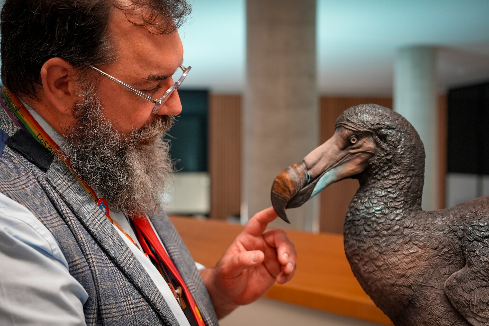

Processo de Extinção
O dodô tornou-se símbolo da extinção causada pela ação humana. Esta ave não-voadora da ilha Maurícia desapareceu completamente em menos de um século após o primeiro contacto com os colonizadores europeus, representando uma das perdas mais emblemáticas da biodiversidade mundial.
Chegada dos Colonizadores (1598)
Os navegadores holandeses foram os primeiros europeus a chegar à ilha Maurícia em 1598. Encontraram uma ave peculiar que não demonstrava medo dos humanos, pois nunca havia enfrentado predadores terrestres. Esta falta de instinto de fuga selou o destino da espécie.
Os marinheiros chamaram-lhe "dodaars" (mergulhão em holandês) ou "dodo", referindo-se à sua aparência desajeitada e comportamento pouco cauteloso.
Fatores da Extinção
A extinção do dodô resultou de múltiplos fatores que atuaram simultaneamente:
Caça direta: Os colonos e marinheiros caçavam os dodôs para alimentação, aproveitando a sua docilidade e incapacidade de fuga.
Destruição do habitat: O desmatamento para agricultura e construção eliminou as florestas nativas onde os dodôs se alimentavam e nidificavam.
Espécies invasoras: Porcos, ratos, cães e macacos introduzidos pelos colonos destruíam os ninhos e competiam por alimento.
Últimos Registos
Os últimos avistamentos confirmados de dodôs datam da década de 1660. O último exemplar terá sido morto por volta de 1681, apenas 83 anos após o primeiro contacto com os europeus.
A rapidez da extinção foi extraordinária mesmo para os padrões da época, tornando o dodô num caso de estudo sobre os impactos devastadores da colonização em ecossistemas isolados.
Legado e Importância
O dodô tornou-se um ícone da conservação e um lembrete permanente das consequências irreversíveis da extinção. A expressão "morto como um dodô" entrou no vocabulário popular, simbolizando algo que desapareceu para sempre.
Hoje, o dodô é o símbolo nacional das Maurícias e inspira esforços de conservação em todo o mundo, lembrando-nos da fragilidade dos ecossistemas e da responsabilidade humana na preservação da biodiversidade.